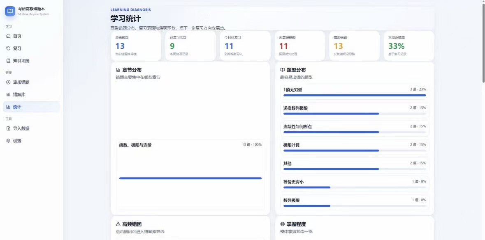

Import mistake questions
Users can organise mistake questions from prepared import files, keeping original question images and structured explanation fields.
Study Workflow / Usability Testing / Local-first App
An independent local-first study tool designed for Chinese postgraduate entrance exam students, supporting mistake question management, knowledge mapping, structured review workflows, and learning progress tracking.
This project was created to support students preparing for China’s postgraduate entrance examination, especially those who need a more structured way to organise math mistakes, connect them with knowledge points, and review them over time.
My role focused on designing the user flow and testing whether the core learning workflow was clear enough for real use. The current version is in beta testing, with ongoing improvements based on user feedback and observed usability issues.
Many students manage mistake questions across notebooks, screenshots, PDFs, and scattered digital files. This makes it difficult to review systematically, understand weak knowledge areas, or build a stable long-term study routine.
The design challenge was to create a workflow that could turn messy mistake materials into a structured local study system without making the user feel overloaded.
Users can organise mistake questions from prepared import files, keeping original question images and structured explanation fields.
Mistakes can be linked with knowledge map nodes, helping users understand which concepts are repeatedly causing problems.
The review flow supports repeated practice, learning progress tracking, and weaker-question prioritisation.

I focused on making the main path from importing questions to reviewing mistakes easier to follow, so users would understand what to do next at each step.
The interface needed to support complex study data without making the app feel too technical or difficult for students to use.
During beta testing, I looked for confusing flows, unclear labels, and points where users might struggle to understand the review system or knowledge map connection.
Reflection
Because the app involves complex study materials, knowledge structures, and review logic, the key UX challenge was making the system feel clear and usable for students. Through user flow design and beta usability testing, I learned how important it is to reduce friction in repeated learning tasks and support users with clear next steps.